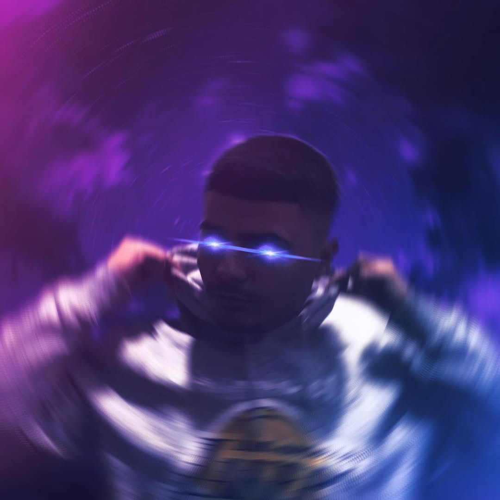

Keto jane statistikat e youtube!
Subscribers
Views
Video

Frensi Ballgjini (i njohur online si TheFERStation) është një YouTuber dhe krijues përmbajtjeje shqiptar. Ai njihet për aktivitetin e tij në lojëra elektronike, vlogje, sfida dhe veçanërisht për përmbajtjen e tij në Dream League Soccer (DLS).
Frensi filloi karrierën e tij si krijues përmbajtjeje duke eksperimentuar me formate të ndryshme, duke përfshirë lojëra të ndryshme, sfida dhe video argëtuese. Ai njihet për energjinë dhe stilin konkurrues para kamerës, si dhe për aftësinë për të angazhuar dhe ruajtur audiencën e tij.
Një pjesë e rëndësishme e përmbajtjes së tij lidhet me Dream League Soccer, ku ai ka zhvilluar seri konkurruese dhe sfida që kanë tërhequr shumë shikues. Përmbajtja në DLS ka ndihmuar në ndërtimin e identitetit të kanalit dhe e ka bërë atë të njohur si një nga krijuesit më energjikë në komunitetin shqiptar të gaming-ut.
Megjithatë, pavarësisht fokusit në DLS, Frensi vazhdon të bazohet në lojëra të ndryshme, vlogje dhe sfida të tjera, duke ruajtur diversitetin e përmbajtjes së tij dhe duke zgjeruar audiencën përtej një loje të vetme. Përmes këtij kombinimi, ai ka arritur të krijojë një stil të veçantë që bashkon energjinë, humorin dhe konkurrencën në mënyrë të ekuilibruar.
Frensi konsiderohet një nga figurat e reja më premtuese të krijimit të përmbajtjes dixhitale në Shqipëri. Ai vazhdon të zhvillojë përmbajtje të reja, të ndjekë trendet e platformave moderne dhe të ruajë lidhjen aktive me audiencën e tij, duke e bërë TheFERStation një nga kanalet e njohura për të rinjtë shqiptarë.
Me kontaktoni mua per bussines inquiries
Me shkruaj ne discord!
Me shkruaj ne instagram!